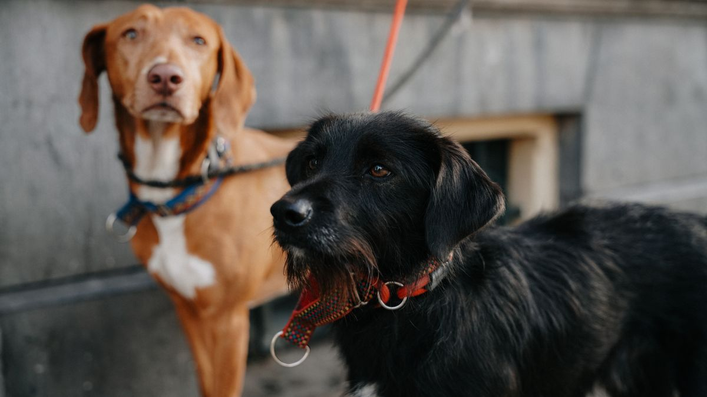
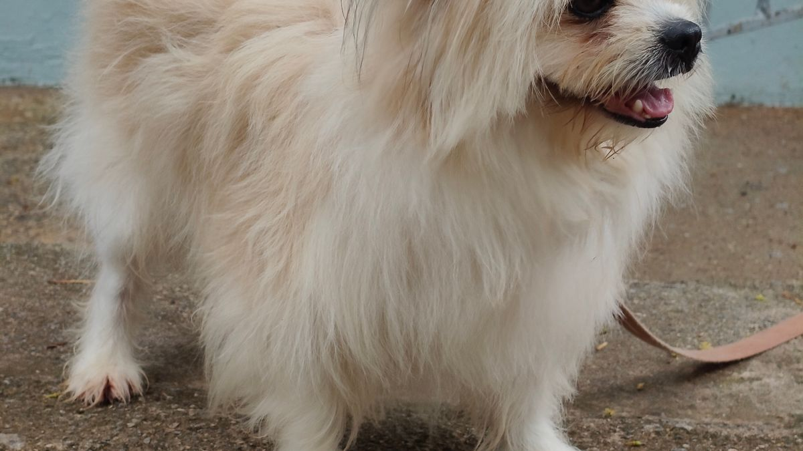
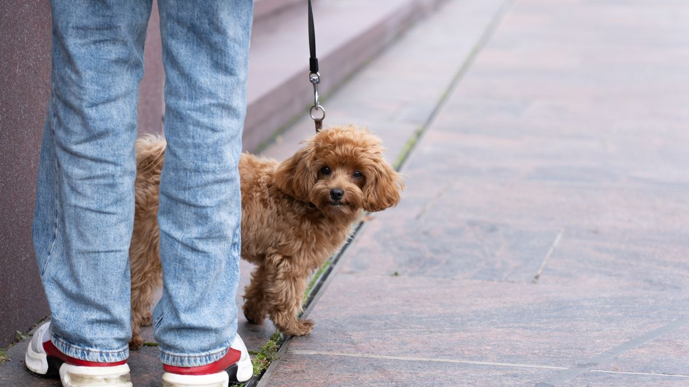

산책의 목적
배변·활동·냄새 탐색·외부 소음 적응이 한꺼번에 일어납니다. '운동만' 보면 거리를 늘리고, '배변만' 보면 5분 만에 집으로 돌아와 탐색이 부족해집니다.

시작 방법
- 1일차: 10분, 발걸음 느리게
- 2~3일차: 15분, 같은 방향
- 4일차 이후: 5분씩만 증가
- 비·폭염: 실내 5분 놀이 2회로 대체
산책 전 5분 조용히 앉아 흥분을 낮추면, 현관 문 앞에서 끊는 횟수가 줄어듭니다.

산책 후 집에 들어오면 물·20분 휴식을 고정하면 다음 산책 기대감이 과해지는 것을 줄일 수 있습니다. 비 오는 날은 복도 왕복 5회+냄새 탐색 5분으로 대체하세요.
주간 루틴 체크
초보 산책은 거리보다 '매일 비슷한 시간·비슷한 코스·비슷한 길이'가 목표입니다. 15분×하루 2회가 1시간 1회보다 입문에 맞는 경우가 많습니다.
하네스는 목보다 가슴·어깨를 감싸는 타입부터 시험하세요. 첫 3일은 집 앞 5분만 걸어도 충분합니다.
더운 날·추운 날은 발바닥·호흡·헥헥거림을 우선 보고, 필요하면 실내 놀이로 대체하세요.
산책 전 물 한 모금, 산책 후 발 닦기 30초를 루틴에 넣으면 피부·실내 청결 모두에 도움이 됩니다.
다른 개·사람을 만나 불안해하면 거리를 벌리고, 무리하게 인사시키지 않습니다. 성공한 산책이 반복되면 거리는 자연스럽게 줄어듭니다.
배변은 산책의 부산물이지 목표가 아닙니다. 집 밖에서 안 해도 실패가 아닙니다.
비·미세먼지가 심한 날은 복도·계단만 이용하는 '미니 산책'도 인정하세요.
노견·슬개골 주의 개체는 계단·경사를 줄이고 평지 위주로 조정합니다.
산책 후 10분 휴식을 고정하면 과흥분·야간 활동 증가를 줄이는 데 도움이 됩니다.
이번 주 산책 체크리스트입니다. 거리보다 시간·반복이 우선입니다.
- 매일 비슷한 시간에 산책을 시도했습니다.
- 하네스 착용을 집 안에서 3분 연습했습니다.
- 더운 날·추운 날 발바닥·호흡을 우선 확인했습니다.
- 산책 후 발 닦기 30초 루틴을 넣었습니다.
- 불안 시 거리를 벌리고 무리한 인사는 피했습니다.
- 비·미세먼지 날 미니 산책(복도·계단)을 허용했습니다.
- 노견·관절 주의 시 계단·경사를 줄였습니다.
- 산책 후 10분 휴식을 고정했습니다.
짧아도 매일 비슷한 산책이, 길고 불규칙한 산책보다 입문에 맞는 경우가 많습니다.
초보 산책은 거리보다 매일 비슷한 시간·길이가 목표입니다. 15분×2회, 하네스는 가슴형부터, 더운·추운 날은 발·호흡을 우선 보세요. 산책 후 발 닦기 30초와 10분 휴식을 고정하면 실내 오염·야간 흥분을 줄이는 데 도움이 됩니다. 불안하면 거리를 벌리고, 배변은 산책의 부산물일 뿐 실패가 아닙니다.
산책 일지에 '오늘 코스 길이(분)'만 적어도, 2주 뒤 적정량 조절에 도움이 됩니다.
산책 일지에 '분·날씨·반응(꼬리/호흡)'만 적어도 2주 뒤 적정량을 찾기 쉽습니다. 거리는 나중에 계산해도 됩니다.
산책 일지에 분·날씨·꼬리/호흡만 적어도 2주 뒤 적정량을 찾기 쉽습니다. 하네스 핏은 2주마다 재는 습관을 붙이면 탈출·마찰을 줄일 수 있습니다.
비 오는 날 복도 왕복을 '실패한 산책'으로 보지 마세요. 탐색 자극이 10분만 있어도 하루 리듬 유지에 도움이 되는 경우가 많습니다.
가족이 번갈아 산책한다면 '오늘 코스·분'을 카톡에 한 줄 남기면 중복·누락을 막을 수 있습니다.
노견·슬개골 주의 개체는 계단·경사를 줄이고 평지 위주로 조정하세요. 산책 후 10분 휴식을 고정하면 야간 활동 증가를 줄이는 데 도움이 됩니다.
이동장·하네스 연습은 산책 전날 2분씩 해도 현관 문 앞에서 끊는 횟수가 줄어드는 경우가 있습니다.
산책은 배변 목표가 아니라 탐색·적응·활동의 균형입니다. 집 밖에서 안 해도 실패가 아니라는 점을 기억하면 루틴 부담이 줄어듭니다.
이 글의 체크리스트는 한꺼번에 적용하기보다 2개만 골라 2주 반복하는 편이 낫습니다.
가족과 공유할 때 '누가·언제' 한 줄만 합의해도 실행률이 달라지는 경우가 많습니다.
장비 점검
H형 하네스(가슴 둘레+2cm 여유), 리드 1.5~2m. 목줄만 쓸 경우 기침 3회 이상이면 하네스로 교체합니다. 산책 후 발·발톱 2분 점검은 필수입니다.

하네스는 2주마다 핏을 재세요. 체중 변화·털 갈이 시기에 헐거워지기 쉽습니다. 리드는 손목에 감지 않는 두께(1.5~2m)가 안전합니다.
한 줄 정리
첫날 3km를 걸은 뒤 다음날 발을 들지 않는 경우를 봤습니다. 산책은 km가 아니라 끝났을 때 숨과 발로 판단하는 편이 안전합니다.
내일은 10분으로 끝낼지 먼저 정해 보세요. 시간이 잡히면 거리는 따라옵니다.
초보자가 자주 실수하는 포인트
- 첫날 2km 이상 장거리
- 비·더위에도 시간·거리 동일
- 목줄 기침 나도 계속 사용
- 산책 후 발 점검 생략
- 모든 개에게 3m 이내 인사 강요
체크리스트
- H형 하네스 핏 확인
- 10~15분 코스 3일 반복
- 산책 시간대 고정
- 산책 후 발 2분 점검
- 폭염·한파 실내 대체 준비
자주 묻는 질문
- 하루에 몇 번 산책해야 하나요?
- 소형견 2회×15분, 대형견 2회×25분이 무난한 출발점입니다. 피로하면 1회로 줄이고 회복을 먼저 보세요.
- 비 오는 날은 어떻게 하나요?
- 실내 10~15분 놀이 2회로 대체하거나, 우비·발 닦기 준비 후 10분 산책만 해도 됩니다. 거리를 늘리지 마세요.
이 글은 초보자 기준으로 이해하기 쉽게 정리되었으며, 내용은 운영 과정에서 순차적으로 보완될 수 있습니다. 수의사 등 전문가의 진단·처치를 대체하지 않습니다.
다른 개·사람 만남
처음 2주는 '인사 거리 3m'를 기본으로 합니다. 무리한 접촉은 스트레스입니다. 다른 반려인이 다가오면 30초 옆으로 비켜 반응을 봅니다.

다른 반려인과 인사할 때는 반려동물 몸이 S자로 구부러지거나 꼬리를 감추면 3m 이상 거리를 유지하세요. '친해지게 해줘'보다 '오늘은 패스'가 낫습니다.